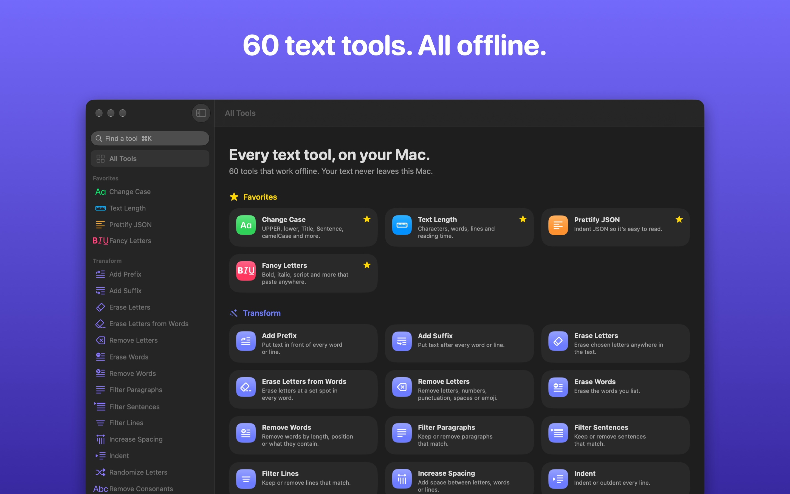

60 text tools for your Mac. All offline.
Change case, count words, clean up spacing, sort and filter lines, make fancy letters, tidy JSON and much more. Built natively for macOS. No ads, no accounts, no tracking.

Questions, bugs or ideas for new tools? Open an issue at github.com/itsdanielsultan/wordkit/issues.
Every keyboard shortcut is listed in Wordkit → Settings → Shortcuts. You can hide tool groups and reset tool settings in Settings too.
Wordkit collects no data. Read the privacy policy.